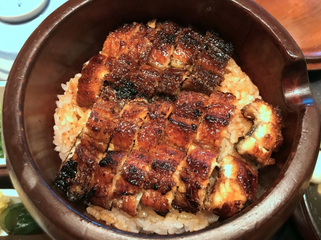
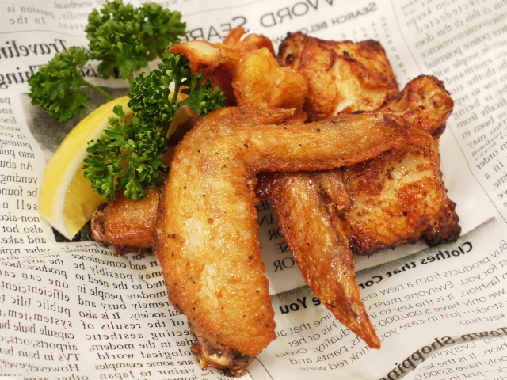

きしめん
きしめんは、愛知県名古屋市を中心に食べられる、平たくて幅広の麺が特徴のうどんです。名古屋のソウルフードとして親しまれています

ひつまぶしは、刻んだ鰻の蒲焼きをご飯と一緒に櫃（ひつ）に盛り付けた名古屋の郷土料理です。薬味や出汁を加えて、色々な食べ方で楽しめるのが特徴です
手羽先唐揚げは、鶏の手羽先をから揚げにした料理です。名古屋で飲食店を開業した大坪健庫が、ある日発注ミスで丸鶏が欠品し、スープの材料として山のように積まれた手羽先を代替品として提供し、ヒットしたことから文化が根付いたといわれています。
きしめんは、愛知県名古屋市を中心に食べられる、平たくて幅広の麺が特徴のうどんです。名古屋のソウルフードとして親しまれています